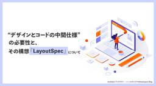

techtekt（テックテクト） | パーソルキャリアのDevelopers Blog
https://techtekt.persol-career.co.jp/
未来の「はたらく」をテクノロジーで創造するパーソルキャリアの「エンジニアリング組織」に所属する社員のリアルな「はたらく」にフォーカスし、組織、そして文化醸成の過程を発信するコンテンツプラットフォーム
フィード

“デザインとコードの中間仕様”の必要性と、その構想「LayoutSpec」について
techtekt（テックテクト） | パーソルキャリアのDevelopers Blog
Figmaとコードを結びつける「LayoutSpec」構造化データの導入とReact実装。「AI 駆動開発」を意識した取り組みを、検証結果とともに詳解。
4日前
情報学部卒の新卒データサイエンティストが、入社5ヶ月目のLLM研修で学んだこと
techtekt（テックテクト） | パーソルキャリアのDevelopers Blog
2026年入社の新卒データサイエンティストが、LLM研修を通じて得た知見と実務での活用方法を振り返ります。機械学習経験者がディープラーニングの新たな視点をどう取り入れたのか。
4日前
なぜ私たちはAI駆動開発ではなくMicrosoft Power Platformを選んだのか #夏のAI技術発信祭
techtekt（テックテクト） | パーソルキャリアのDevelopers Blog
システム移行プロジェクトでの技術選定の要点を解説。Microsoft Power Platformを選んだ理由と、AI駆動開発を見送った背景を詳述。
4日前
ユーザーが1人しかいないアプリをAIで作る ＃夏のAI技術発信祭
techtekt（テックテクト） | パーソルキャリアのDevelopers Blog
ユーザーが1人しかいないアプリをAIで迅速に作成する秘訣。自分専用ツールが作業効率を飛躍的に向上。
4日前
学生時代の思考の癖は、きっと新しい環境での支えになる。文系出身の見習いデータサイエンティストがRAG実装で学んだ課題解決の本質 #夏のAI技術発信祭
techtekt（テックテクト） | パーソルキャリアのDevelopers Blog
新卒データサイエンティストが文系未経験から挑んだLLM研修やRAG実装の奮闘記。社会学で培った思考法が、データサイエンスの現場でどう活かされたかを語ります。
4日前

AWS Backup導入でS3・GuardDutyのコストが急増した話｜原因と対策
techtekt（テックテクト） | パーソルキャリアのDevelopers Blog
AWS Backup導入で発生した予想外のコスト急増問題の調査と対応を詳しく解説。S3とGuardDutyのコスト削減ステップを公開。
4日前
使う人を迷わせない。でも、決めすぎない。LLMの出力評価プロセスの標準化 #夏のAI技術発信祭
techtekt（テックテクト） | パーソルキャリアのDevelopers Blog
記事では、LLMを活用したプロダクト開発における評価プロセスの標準化について解説。記事の目的は、評価の柔軟性を保ちつつ評価の一貫性を確保する方法を示すことです。
4日前

中規模業務フォームのフロントエンドを実質1人で担当するために、「保証駆動開発」を実践した話
techtekt（テックテクト） | パーソルキャリアのDevelopers Blog
AIエージェントの活用を前提にした新しいフロントエンド開発手法「保証駆動開発」の実践レポート。1人で挑んだ業務フォームプロジェクトで得た知見と課題を詳しく解説します。
5日前
効率的にAIを使うために、あえて「非効率」を選んだ話 #夏のAI技術発信祭
techtekt（テックテクト） | パーソルキャリアのDevelopers Blog
AI活用の新アプローチ：非効率を意図的に取り入れることで得られた気付きと効率の向上の秘訣
5日前
AI時代の指標づくり — 「ありたい未来」を、走りながら育てる ＃夏のAI技術発信祭
techtekt（テックテクト） | パーソルキャリアのDevelopers Blog
AI活用における指標の重要性とその設計方法を、視座、柔軟性、視野の3つの観点から解説します。組織がAIを効果的に導入するためのヒントを提供します。
5日前
経験は武器か、それとも足かせか？ - 書籍で独学した世代が、AIと出会って気づいたこと #夏のAI技術発信祭
techtekt（テックテクト） | パーソルキャリアのDevelopers Blog
20年のIT業界経験とAI活用による新時代の挑戦。過去の経験を武器に、AIとの共生を探る。
6日前
視点を分ければ、AIの深堀り方は変わるのか？通常チャットと複数Agentで比較してみた。 #夏のAI技術発信祭
techtekt（テックテクト） | パーソルキャリアのDevelopers Blog
異なる視点での検討方法を検証！通常チャットと複数Agentの深掘り方法における違いを実例を基に説明します。
6日前

AIに仕事を頼むのになぜか疲れる？「レビューコスト」と上手に付き合うコツ #夏のAI技術発信祭
techtekt（テックテクト） | パーソルキャリアのDevelopers Blog
AIの導入で「作る」時間は短縮されたが、レビュー作業が新たな負担に。AIが生成した資料の評価と適切なコンディション管理が求められる今、ワークライフバランスの重要性がますます高まっています。
9日前
「AIと面接をする日」をCopilotと想像してみて感じたこと #夏のAI技術発信祭
techtekt（テックテクト） | パーソルキャリアのDevelopers Blog
AIが面接を代行する未来の可能性を探る。面接の役割とは何か、AIが関与することの利点と課題、そして人材紹介会社の役割を再考します。採用やAI技術に興味がある方必見。
9日前
コンセプトが変わっても1週間で形にする - Copilot×MVP要件の実践記録 #夏のAI技術発信祭
techtekt（テックテクト） | パーソルキャリアのDevelopers Blog
AIを活用してMVPの要件を効率よく策定する方法について、プロダクトマネジャーが得た価値ある気づきを共有します。
10日前
アナリスト3年目がE資格受験を通じて得たもの
techtekt（テックテクト） | パーソルキャリアのDevelopers Blog
E資格を通じて得た体系的な知識と業務への活用方法を詳述。資格試験を勉強しながら学びを深め、実務に役立てたい方必見の記事です。
10日前
議事録の要約だけでは届かない？週次サマリ作成で学んだ「要約」と「編集」の違い #夏のAI技術発信祭
techtekt（テックテクト） | パーソルキャリアのDevelopers Blog
議事録の要約を超える！AI編集パートナーとしてCopilotを活用し、情報を効率的に伝えるための工夫を共有します。
10日前
開発初心者がClaude Codeに頼りすぎて学んだAIとの向き合い方 #夏のAI技術発信祭
techtekt（テックテクト） | パーソルキャリアのDevelopers Blog
新卒でITコンサルタントとして入社した今井が、AIを活用した開発の中で得た経験と教訓を共有。具体的なエピソードを通じて、AIと人間の協働が成長に繋がる過程を解説します。
15日前
数値の正しさを説明できない状態からの脱却――ボトムアップ型データモデリングの3ステップ
techtekt（テックテクト） | パーソルキャリアのDevelopers Blog
データモデリングの新たなアプローチを紹介。複雑なシステム環境でボトムアップ手法を活用し、現実的なデータ活用を追求します。
16日前
2年目エンジニアがAIツールと一緒に飛び込んだ、データ基盤とインフラの世界 #夏のAI技術発信祭
techtekt（テックテクト） | パーソルキャリアのDevelopers Blog
日々の業務でAIツールを活用しながら、未経験のデータ基盤・インフラ領域に挑むエンジニアの奮闘記。テストやドキュメント管理の効率化術を紹介。
17日前
「なんとなくデータがおかしい」をなくすための Elementary 導入記
techtekt（テックテクト） | パーソルキャリアのDevelopers Blog
Elementaryを用いたデータ品質監視の導入事例を紹介します。dbtと連携した異常検知の仕組みを構築し、データの可視化と早期の問題検出を可能にしたプロセスをご覧ください。
18日前
理解することを諦めないAI開発 #夏のAI技術発信祭
techtekt（テックテクト） | パーソルキャリアのDevelopers Blog
生成AIを活用した開発現場での実践と学びを共有。速さの恩恵と理解の重要性について考えます。
19日前
プロジェクトが動く「型」をつくる～複数プロジェクトの立ち上げで実践したPM業務のCopilot活用～ #夏のAI技術発信祭
techtekt（テックテクト） | パーソルキャリアのDevelopers Blog
AI技術を活用したプロジェクト運営の効率化と標準化についての実践的なガイド。進捗報告の質を高めるための具体的手法を紹介します。
20日前
Databricksの基本 - 思想と中核技術 -
techtekt（テックテクト） | パーソルキャリアのDevelopers Blog
Databricksの思想と技術を探る：データとAI統合の最新プラットフォームを解説し、その中核技術であるDelta LakeとUnity Catalogについて紹介します。
23日前
はたらいて、笑おう。を体現する——アナリティクスグループの対話を育てる取り組み
techtekt（テックテクト） | パーソルキャリアのDevelopers Blog
『はたらいて、笑おう。』を体現する取り組みとして、チームの心理的安全性を高め、コミュニケーションを活性化した成功例を紹介します。
24日前
AIを使い続けて気づいた、人間の仕事は「答え」より「問い」かもしれない #夏のAI技術発信祭
techtekt（テックテクト） | パーソルキャリアのDevelopers Blog
AIを仕事やプライベートで多用する筆者がAIの意図を探り、業務の課題を浮き彫りにする過程を綴った記事
25日前
【入社後インタビュー】ベンチャー・フリーランスを経たエンジニアがパーソルキャリアを選んだ理由 #02
techtekt（テックテクト） | パーソルキャリアのDevelopers Blog
T.O氏のインタビュー記事では、物理学からプログラミングへの転身、そしてAIを活用した全社的な変革に取り組む姿が描かれています。技術と組織の両面から価値創造に挑むエンジニアの姿勢が光ります。
1ヶ月前
AIの出力品質を上げたのは「現場の暗黙知を形式知にすること」だった #夏のAI技術発信祭
techtekt（テックテクト） | パーソルキャリアのDevelopers Blog
暗黙知を形式知に変えることで、LLMの精度を大幅に向上！求人自動生成の秘訣を公開します。
1ヶ月前
コードを書くだけがエンジニアリングじゃない！？ ー AIと共に「作り方」を見直した話 #夏のAI技術発信祭
techtekt（テックテクト） | パーソルキャリアのDevelopers Blog
エンジニアリング＝コーディングと思っていた新人時代から、AI活用で広がる本質的なエンジニアリングの姿を探る。AI時代におけるエンジニア像を再定義。
1ヶ月前
曖昧な議論を前に進めるための思考の可視化-言葉だけでは見えないものを描く試行錯誤-
techtekt（テックテクト） | パーソルキャリアのDevelopers Blog
新人デザイナーが挑む合宿運営の裏側を公開。UI/UXデザイナーが可視化を駆使して乗り越えた過程を綴ります。
1ヶ月前